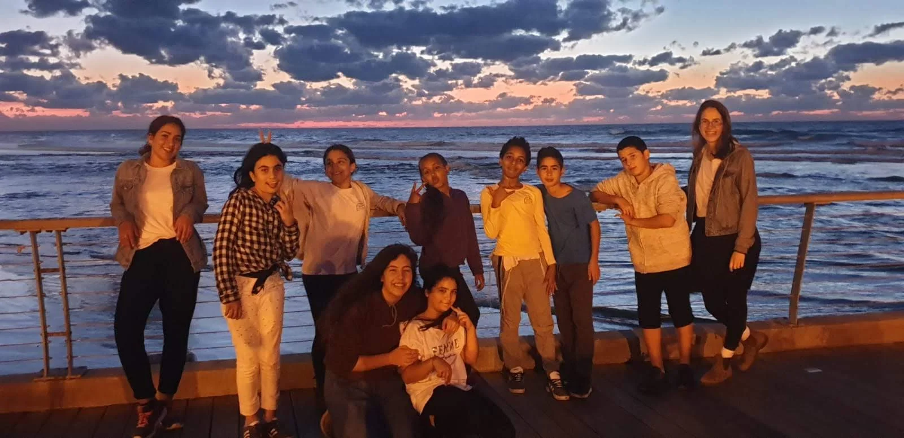

מי אנחנו
אחד הדברים הכי מיוחדים בבית הנוער שלנו זה שהוא החל את דרכו כבית נוער צעירים - לגילאי יסודי ועם השנים הפך לבית נוער בוגרים - גילאי חטיבה ותיכון, עם גדילתם של הנערים. קבוצות הבוגרים של בית הנוער החלו את דרכם אצלנו כשהם היו בכיתות ג'-ד' וממשיכים להגיע עד היום כשהם בכיתות י'-יב'.
זה הקסם של בית הנוער וזה מראה את החשיבות והמקום שהוא תופס בשביל החניכים האהובים שלנו.
בית הנוער מהווה עבורם בית שני - מקום בו הם מבלים את שעות אחה"צ שלהם, מקום בו הם מקבלים תגבור לימודי, פעילויות חברתיות, קשר אישי וחם עם מתנדבים ומדריכים, מקום בו מכילים אותם, מקשיבים להם ודואגים להם, מקום שהוא בית נוסף.
לכל נער/ה יש חלום, משהו שהם רוצים להשיג או לעשות בעולם ותפקידנו כאנשי חינוך זה לעזור להם להאמין בעצמם וביכולות שלהם ולעזור להם לזהות את החוזקות שלהם שיעזרו להם להפוך את החלום הזה למציאות.
"אנחנו לא זקוקות לקסם כדי לשנות את העולם,
אנחנו נושאות את כל הכוח שאנחנו צריכות בתוכנו:
את הכוח לדמיין שיכול להיות יותר טוב"
הסופרת ג'יי, קיי, רולינג
תודה מיוחדת לחברת "צ'מפיון מוטורס" על אימוץ בית הנוער
